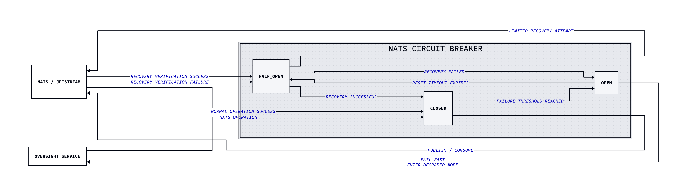
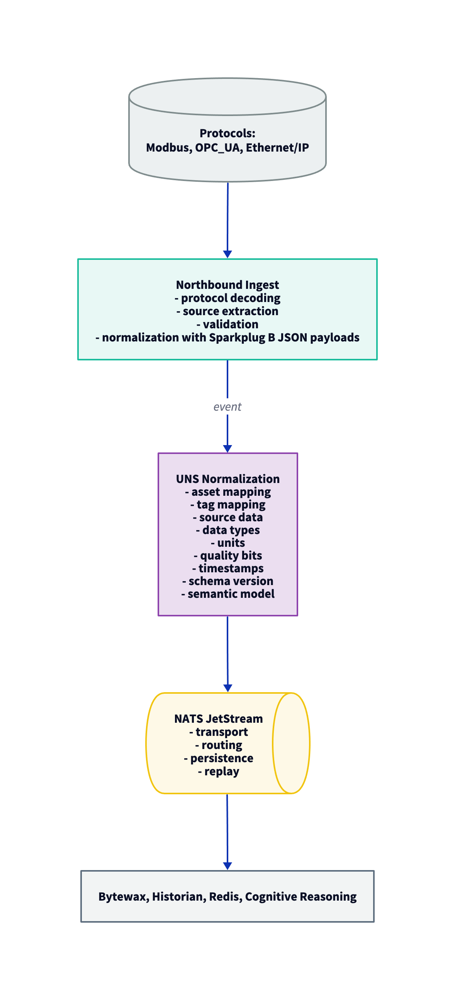

RFC-001 - Unified Namespace & Messaging Architecture
Author: Amy Mummert
Status: Proposed
Date: 2026-08-31
Target Components: NATS JetStream & Unified Namespace
Background / Context
This RFC outlines the proposed creation of a unified namespace and messaging architecture for Oversight ICS. The Unified Namespace (UNS) provides event-driven communication layer that connects telemetry producers, streaming analytics, safety validation services, and the Southbound Driver and uses NATS JetStream as the core message broker.
The UNS provides a single source of truth and provides hardware abstraction by providing downstream services with semantic telemetry data that is not tied to any specific register addresses. It connects the data from the control assets (e.g., PLCs, RTUs, and sensors), edge-of-network devices, SCADA, MES, ERP, etc. into one standardized event stream. By using a UNS, Oversight can speed up Industrial Internet of Things (IIoT) and edge systems, by providing a single source of truth for telemetry and commands, leading to a more efficient and effective system.
The system bridges deterministic OT systems with modern AI reasoning and event-driven analytics while maintaining zero-trust safety by implementing strict separation between the following:
- Telemetry Ingestion
- Telemetry Normalization
- Telemetry Transport
- Streaming Analytics
- Cognitive Reasoning
- Safety Validation
- Physical Execution
Component Responsibilities
Northbound Ingest Service: Terminates and normalizes raw industrial protocols into Sparkplug B JSON payloads and extracts raw source data. UNS Normalization: Provides a standardized, vendor-agnostic namespace for telemetry and command data. NATS JetStream: Transports, persists, routes, and replays telemetry and commands. Downstream Consumers: Processes the events without needing to know the original protocol or physical register addresses.
Problem Statement
Industrial Control Systems expose data through several protocols, including Modbus, OPC_UA, and Ethernet/IP. These protocols may expose vendor-specific addressing, device-specific naming, data types, units, and quality bits.
If downstream consumers knew this information, Oversight would become tightly coupled to individual control systems and this would create several problems:
- Vendor-specific dependencies
- Physical Register Address Exposure
- Challenging Horizontal Scaling
- Tight Coupling Between Cognitive Services and OT
- Increased Safety Risk
- Challenging Portability Between Plants
- Difficult Replay and Forensic Auditing
- Increased Sensitivity to Network Latency and Polling Jitter
Oversight therefore requires a messaging architecture that supports the following:
- High-throughput telemetry (10,000 points per second)
- Low-latency telemetry ingestion and normalization (sub-50ms)
- Durable event storage
- Replayable telemetry, event, and command history
- Subject-Based Routing
- Hardware Abstraction
- Schema Versioning
- Traceability and Forensic Auditing
- Controlled access to event subjects
To achieve this, Oversight uses the Unified Namespace (UNS) to abstract the physical register addresses and vendor-specific protocols.
Proposed Solution
The proposed solution is to use NATS JetStream as the core messaging component for the Unified Namespace to enforce strict Command Query Responsibility Segregation (CQRS) allowing high-velocity telemetry to remain separate from control intent execution.
The Read Path (Ingestion & Observation)
Raw industrial protocols are ingested and strictly terminated by the Northbound Ingest Service preventing direct
sessions with the field assets. They are then normalized into Sparkplug B JSON payloads containing metadata and integer
quality bits (e.g., 192 for “Good”). These normalized payloads are then published to the NATS JetStream message bus
(oversight.telemetry.>) and are consumed by the Bytewax Streaming Engine. The Bytewax Streaming Engine performs
windowed Z-Score drift detection and concerrently publishes the results to the TimescaleDB telemetry historian (for the
90-day warm tier) and the Redis Hot Cache (for sub-second lookups).
The Write Path (Control Execution)
Control intents and manual overrides are published to the NATS Command Queue oversight.commands.proposed. These
commands are sent to be validated by the Level 1.5 Arbitrator, Semantic Gatekeeper, and the TPM 2.0 hardware signer. If
the command fails it is routed to oversight.commands.failed, moved into the DLQ, and persisted to the WORM audit log.
The fully notarized commands are then handed to the Southbound Driver for execution, which then publishes the results to
oversight.commands.executed.
Unified Namespace (UNS) Information Model
IEC 62264 Hierarchical Topic Structure
Oversight strictly follows the IEC 62264 enterprise standard for topic structure with NATS dot notation to route data.
Format
Enterprise.Site.Area.Line.Asset.Tag
Example
AcmeCorp.Longview_Plant.WaterTreatment.Filtration.Pump_01.Discharge_Pressure
UNS elements for Oversight ICS should:
- Be deterministic
- Be unique within their hierarchy
- Use consistent naming conventions
- Avoid physical protocol addresses or vendor-specific protocols
- Be versioned and schema-compliant
- Be traceable, auditable, immutable, and replayable
- Be hardware-agnostic
- Be horizontally scalable
- Be resilient to network partitions, service address, network jitter, network latency, polling jitter, packet loss, and blocking cyclic scan loops
- Remain stable when the source protocol changes
Message Payload
Example:
{
"message_id": "uuid",
"trace_id": "uuid",
"correlation_id": "uuid",
"timestamp": "2026-08-31T18:00:00Z",
"source": "northbound-ingest",
"schema_version": "1.0",
"asset": {
"enterprise": "AcmeCorp",
"site": "Longview_Plant",
"area": "WaterTreatment",
"line": "Filtration",
"asset": "Pump_01",
"tag": "Discharge_Pressure"
},
"value": 120.5,
"unit": "psi",
"quality": 192
}
Architectural Design Principles
-
Semantic Independence: Downstream consumers must not know the physical register addresses or vendor-specific protocols. Instead, the UNS provides a semantic namespace that abstracts the physical register addresses and vendor-specific protocols.
Examples: - Modbus register addresses - OPC_UA node identifiers - Ethernet/IP object addresses - Vendor-specific device naming
-
Transport Independence: The event contract must remain decoupled from the NATS JetStream implementation details
-
Idempotent Command Enforcement:
- Oversight uses At-Least-Once command delivery using NATS JetStream durable consumers and acknowledgements.
- Each command carries a
command_id(UUIDv4) that is used to ensure idempotency to prevent duplicate executions.
-
Distributed Tracing: The
trace_id(UUIDv4) that propagates from the LangGraph Agent is injected into the NATS JetStream message headers of the Command Queue and the Southbound Driver’s execution payload (a live traveling metadata tag). -
Command Time-to-Live (TTL): Every intent published to the NATS Command Queue carries a strict command ttl (default: 2000 ms). If a command is delayed by network jitter, it expires in the queue rather than executing a stale action seconds later.
-
Message Durability: Using NATS JetStream’s immutable streams and consumer offset tracking, the system guarantees it will not lose any intents or telemetry packets, even during a hard power failure. Unacknowledged commands are re-queued upon system restart.
-
Latency Targets
- Ingest-to-UNS (NATS): < 50ms
- UNS-to-Bytewax (Processing): < 20ms
-
Dead Letter Queue (DLQ): Any telemetry tasks that fail validation or cause a reasoning timeout are moved to a dedicated NATS DLQ. This prevents non-validated tasks from clogging the primary pipeline while preserving them for developer forensics.
-
Consumer Prefetch (Backpressure Management): By using NATS consumer pull-model flow control, the system prevents the Agent from being overwhelmed by telemetry bursts. This lets the Broker buffer the load while the reasoning engine completes its inference cycle.
-
Health Metrics: Tracks system-level KPIs via NATS Consumer Lag If backpressure rises, Prometheus triggers a System Health alert before telemetry data is dropped.
-
Data Storm Resilience (NATS Buffer): During telemetry surges or “Data Storms,” the Northbound Ingest Service uses NATS as a disk-persistent local buffer. This prevents memory exhaustion and protects the NATS Command Queue from being overwhelmed.
-
Horizontal Scaling: The system leverages NATS consumer groups to distribute the telemetry of thousands of sensors across multiple Edge Gateway nodes.
-
Fail-Safe “HOLD” Mode: In the event of a heartbeat failure, the system will purge all pending intents in the NATS Command Queue and issues a
WATCHDOG_TRIPalarm. -
System Cold-Boot Protocol: The system enters a 60-second passive synchronization state when powering on to prevent the cognitive reasoning engine from acting on stale telemetry.
Failure Modes & Fallbacks
NATS Telemetry Stream Stale / Idle Timeout (Zero-Tolerance Watchdog)
If the NATS consumer detects stream silence (no telemetry packets arrive within the specified timeframe), the system
will trigger a dedicated NATS Watcher service which publishes a STALE_DATA event. This forces the reasoning agent
into a safe state and instantly revokes the AI’s writing privileges.
Middleware Integrity Watchdog (Fail-Safe “HOLD” Mode)
The Southbound Driver actively monitors the LangGraph Agent’s heartbeat via the NATS JetStream KV store. If the
Agent’s timestamp becomes stale, the system purges all pending intents in the NATS Command Queue and issues a
WATCHDOG_TRIP alarm.
NATS Message Broker Latency
- The Oversight system MUST monitor NATS message latency for time-sensitive operations.
- Latency MUST be monitored against the defined thresholds. Thresholds are appropriately defined based on message type and operational requirements.
- The system MUST treat the message flow as degraded when latency exceeds the defined thresholds.
- Latency MUST NOT result in autonomous physical actuation.
- The system MUST log latency events and alert the operator when the threshold is exceeded.
- Normal message flow MUST NOT resume based on latency decreases. Recovery MUST require health verification.
NATS Command TTL Expiry
- Every command that affects physical actuation MUST have a defined TTL (Time-to-Live). The TTL indicates the max period for which the command is stored in the stream.
- The TTL MUST NOT be executed after its TTL has expired.
- Command validation MUST be performed before physical actuation is allowed.
- If a command reaches its TTL without successful processing and acknowledgment, it MUST be marked
EXPIREDand any further execution MUST be prevented. - If a command is expired, the system MUST NOT try to retry or reissue automatically.
- The system MUST log the command expiration, including the command id and expiration reason.
- The system MUST alert the operator when command execution affects control operations.
- Expiration of a command MUST NOT result in autonomous physical actuation.
{kind=link}
NATS Connection Failure
The Oversight system treats NATS and JetStream as non-authoritative. Failure of NATS or JetStream MUST NOT cause autonomous physical actuation.
Bounded Retries
- Connection attempts MUST be bounded to prevent retry storms.
- Connection failures are evaluated by the NATS circuit breaker.
Health Verification
- Recovery MUST require successful health verification before normal message flow resumes.
- Recovery MUST NOT automatically restore normal message flow.
- After the reset timeout expires, the circuit breaker MUST transition from
OPENtoHALF_OPENand permit a limited recovery attempt. - Normal message flow MUST resume only after successful health verification.
- A failed recover attempt MUST transition the circuit back to OPEN.
Logging and Operator Alerting
- The system MUST log the NATS failures, circuit breaker transitions, recovery attempts, and recovery failures.
- The system MUST alert the operator when NATS availability affects normal operations or causes a transition to the degraded authority mode.
NATS Circuit Breaker
The Oversight system uses a circuit-breaker to prevent continuous attempts against a failing NATS dependency.
- Services SHOULD use a circuit breaker to stop repeated connection attempts after the configured failure threshold is reached.
- CLOSED: Normal operation. The system is healthy and NATS is available.
- OPEN: The failure threshold is reached. NATS operations are rejected or fail fast, and repeated connection attempts are blocked.
- HALF-OPEN: After the reset timeout expires, a limited recovery attempt is made. This is to determine if NATS has recovered.
- Successful Recovery: If the system has a successful recovery, the circuit transitions from HALF-OPEN to CLOSED.
- Failed Recovery Attempt: A failed recovery attempt transitions the circuit back to OPEN.
Degraded Authority Mode
- Dependent services MUST fail closed with respect to any physical actuation operations and transition to the degraded authority mode.

Data Flow

Note
The core problem is ingesting telemetry without exposing the physical register addresses to the cognitive reasoning layer. Even though the Northbound Ingest Service is responsible for normalizing the raw industrial protocols, the UNS defines what the data means and NATS transports that data.
NATS JetStream Subject Routing
To enforce strict routing between the Read and Write paths, the broker will enforce the following contracts/namespaces:
| Subject | Description | Processing Component | Data Flow |
|---|---|---|---|
oversight.telemetry.> |
UNS telemetry events | Northbound Ingest / UNS | Read Path |
oversight.commands.> |
Command events | Level 1.5 Arbitrator | Write Path |
oversight.events.> |
System generated events | LangGraph Agent & Bytewax | Events |
oversight.audit.> |
Immutable WORM retention | TimescaleDB & LGTM Stack | Audit |
oversight.health.> |
Health and operational status events for Oversight services | Platform Service Monitoring | Health |
Telemetry Subjects
oversight.telemetry.> is the subject for all telemetry events.
Wildcard: oversight.telemetry.AcmeCorp.Longview_Plant, oversight.telemetry.AcmeCorp.Longview_Plant.WaterTreatment
The subject must not contain physical register addresses or vendor-specific protocols.
Event Subjects
oversight.events.> is the subject for all system-generated events.
Examples:
oversight.events.failoveroversight.events.alarmoversight.events.statusoversight.events.driftoversight.events.loss_of_signaloversight.events.state_changeoversight.events.manual_override
Command Subjects
oversight.commands.> is the subject for all proposed commands.
Examples:
oversight.commands.proposedoversight.commands.validatedoversight.commands.executedoversight.commands.failedoversight.commands.rejected
Audit Subjects
oversight.audit.> is the subject for all telemetry and command history.
Examples:
oversight.audit.telemetryoversight.audit.commandsoversight.audit.eventsoversight.audit.failoveroversight.audit.manual_override
Health Subjects
oversight.health.> is the subject for all health and watchdog pulses.
Examples:
oversight.health.service_upoversight.health.service_downoversight.health.watchdog_pulse
Testing Configuration
The following testing configuration is used for testing NATS JetStream:

Message Broker Tradeoffs, Drawbacks, and Alternatives: NATS JetStream vs. Kafka vs. RabbitMQ
I chose NATS JetStream as the message broker for the telemetry stream and command queue, instead of RabbitMQ or a standard MQTT Broker (Mosquitto) or Kafka. NATS JetStream provides a high-performance, lightweight messaging system that is appropriate for the high-velocity telemetry data in an OT environment. NATS JetStream offers lightweight connectivity, low latency, and built-in support for message persistence and replay. These are all critical for the real-time monitoring and control requirements of the system.
Tradeoff
For this specific use case, the simplicity and performance of NATS JetStream make it the best fit for the high-throughput time-series telemetry and command messaging needs of the system.
I also considered Kafka, RabbitMQ, and Mosquitto as potential message brokers, but found them to be too complex and/or expensive for this use case. One thing I found with RabbitMQ was that it is not designed for high-throughput time-series data, which is a hard no for the Oversight system. It also deletes messages once consumed, which is not suitable for the command queue and audiits. Kafka, on the other hand, does handle high-throughput time-series data very well. However, it would not be cost-effective as a solo developer to use it and requires more setup, maintenance, and expertise.
NATS JetStream provides me a simpler, more lightweight solution that still meets the performance and reliability requirements of the Oversight system without introducing unnecessary complexity and cost.
Implementation Plan
Phase 1: Broker & NATS JetSream Configuration
- Deploy NATS JetStream on the Level 3.5 IDMZ.
- Enable JetStream
- Configure persistent storage for the telemetry and command queues.
- Configure Authentication & Authorization.
- Establish Health Monitoring.
- Configure NATS JetStream consumer groups and DLQ.
- Configure consumer offset tracking and Write Once Read Many (WORM) retention policies to enforce the at-least-once processing of messages.
- Implement Failure Modes:
- If downstream consumer latency or backpressure is too high and exceeds safe execution limits, NATS will manage buffer saturation with consumer pull-models and Linux Cgroups. Stream silence means the system will trigger the Zero-Tolerance Watchdog to inhibit AI writes.
Phase 2: UNS Contract
- Define the semantic hierarchy of the UNS.
- Define Telemetry, Event, and Command Subjects.
- Define schema versioning.
- Define UNS rules
- Rule 1: No physical register addresses or vendor-specific protocols in the UNS.
- Rule 2: All telemetry and command events must be traceable, auditable, immutable, and replayable.
- Rule 3: Protocol changes must not change the semantic identity.
- Rule 4: Namespace names are deterministic and unique.
- Rule 5: Mappings are version-controlled and schema-compliant.
- Map raw vendor registers to the ISA-95 / IEC 62264 UNS namespace. The topic structure will be
AcmeCorp.Longview_Plant.WaterTreatment.Filtration.Pump_01.Discharge_Pressure. This occurs via tag dictionary lookup / uns mapping where raw data is translated into the Sparkplug B payloads needed for the system.
Phase 3: Stream Configuration
- Create stream configuration (telemetry, event, command, and audit) in NATS JetStream
- Configure command expiration
- Configure consumer groups and DLQ
- Configure consumer offset tracking and WORM retention policies
- Implement pull consumers where necessary to handle backpressure.
- Implement consumer group rebalancing.
- Configure acknowledgement behavior.
- Configure consumers
- Implement idempotency
Phase 4: Security & Operational Configuration
- Create NATS identities
- Apply least-privilege access control to the NATS identities
- Enable authentication and authorization
- Enable TLS
Phase 5: Validation, Stress, and Fallback Testing
- Execute integration tests to verify that the stream publishes, the subscriber consumes the messages, and consumer group rebalancing is tracked correctly.
- Simulate network partitions, stream silence, and sequence number skips to test the Zero-Tolerance Watchdog, which should inhibit AI writes and trigger safe-state logging.
- Conduct backpressure testing using Linux Cgroups and NATS pull-consumer models, which prevents stream saturation from degrading Level 1 deterministic control loops.
Risks & Security Considerations
- Security: The system is designed to operate within a Level 3.5 IDMZ/Edge environment. All data is encrypted at rest and in transit. The system uses TPM 2.0 for hardware-based key storage and signing of commands. All commands are validated and authenticated before execution.
- Risks:
- Single Point of Failure: The NATS JetStream broker is a critical component. If it fails, telemetry and
command messaging will be disrupted.
- To mitigate, use a clustered NATS deployment with failover.
- Latency: High latency in the command queue could lead to delayed execution of control intents.
- To mitigate, monitor latency and implement backpressure handling.
- Data Loss: In the event of a crash, there is a risk of losing unprocessed messages.
- To mitigate, use persistent storage and replay capabilities of NATS JetStream.
Impact and Benefits
| Area | Impact | Benefit |
|---|---|---|
| Hardware Abstraction | Decouples AI Agent and UI Dashboards from the Level 1 register addresses | Allows the system to be hardware and vender-agnostic. It remains horizontally scalable across multiple-brand industrial plants without rewriting code. |
| CQRS Isolation | Strict separation of high-velocity telemetry (read path) from the command path (write path) | Prevents compromising physical safety and deterministic timing of the Level 1 control loops. |
| Forensic Traceability | Provides a distributed WORM-compliant log for every telemetry frame and command transition | Full auditability and step-by-step reasoning replays of every command and telemetry frame for ISA 18.2, NERC CIP, and EPA regulatory compliance. |
| Sub-50ms Latency Target | Ingests and normalizes telemetry into the NATS UNS within a sub-50ms latency target | Prevents network jitter or blocking cyclic scan loops during delivery of high-velocity telemetry processing. |
| Edge Autonomy | Broker, stream engine, and command queues are inside the Level 3.5 IDMZ/Edge. | Maintains full autonomy and safe-state control even during the loss of internet connectivity. |
Conclusion
By choosing NATS JetStream as the message broker, I have achieved the following:
- Meets the strict CQRS architecture requirements
- Provides hardware abstraction by keeping the cognitive reasoning layer from knowing the physical register addresses. This also allows for the system to be hardware-agnostic.
- NATS JetStream is lightweight and provides a distributed log that is WORM compliant. This allows for every telemetry frame and proposed command to be traceable and forensically auditable.
- The Level 3.5 IDMZ/Edge maintains full autonomy and safe-state control even during loss of internet connectivity.
References
Applying the ISA/IEC 62443 Standards for IACS Security
Unified Namespace and Data Management
NATS JetStream Dead Letter Queue
UNS MQTT OPC-UA Power Plant Data